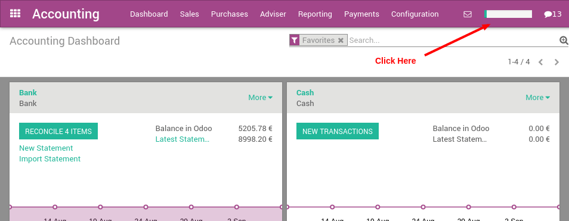

The YuanCloud Accounting application has an implementation guide that you should follow to configure it. It's a step-by-step wizard with links to the different screens you will need.
Once you have installed the Accounting application, you should click on the top-right progressbar to get access to the implementation guide.
The implementation guide will help you through the following steps:
完善你的公司设置
输入你的银行账户
选择你的科目表
确认常用税率
设置外币
导入你的客户
导入你的供应商
导入你的产品
导入你的未清账款交易
导入你的起始余额
为会计定义用户

Once a step is done, you can click on the "Mark as Done" button, in the bottom of the screen. That way, you can track the progress of your overall configuration of YuanCloud.